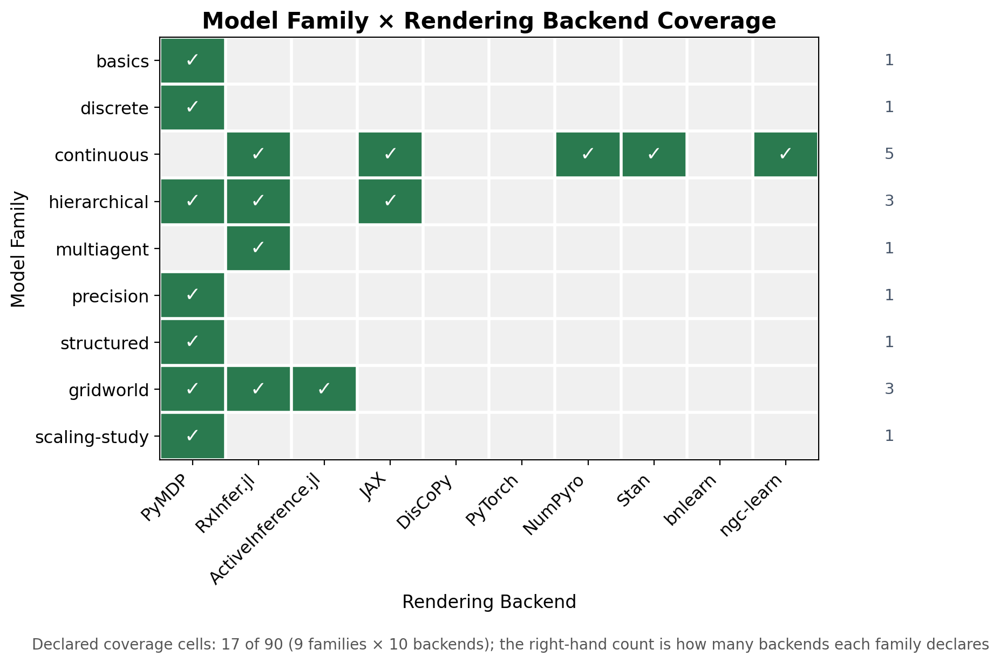
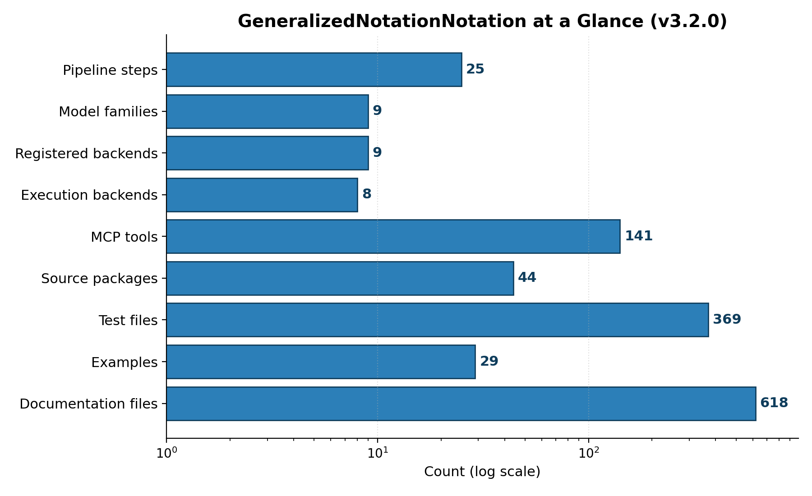

Artifacts and Evidence
This section reports what the project has actually produced and how each quantitative claim is grounded. Every number below is substituted at render time from the deterministic producer that reads the repository state, so the manuscript can never drift from the artifacts it describes.
Model-Family Coverage
GNN ships a curated corpus of model families that exercise the
language across the difficulty gradient from minimal parser fixtures to
full multi-agent and scaling studies. The current corpus spans 9
families (basics, discrete, continuous, hierarchical, multiagent,
precision, structured, gridworld, scaling-study), drawn from 10 family
directories under input/ and comprising 29 concrete example
models. Each family declares the simulation frameworks it is meant to
drive, which is what lets the same text model fan out across the
executable-model leg of the Triple Play [gnn2023]. The families and
their declared frameworks are enumerated below.
| Family | Frameworks | Description |
|---|---|---|
basics |
pymdp | Minimal perception fixtures used for parser and validator smoke coverage. |
discrete |
pymdp | Discrete POMDP and HMM-style active inference fixtures. |
continuous |
jax, numpyro, stan, rxinfer | Continuous-state linear-Gaussian fixtures (F/H/Q/R + Gaussian prior; continuous_navigation closes the loop on beliefs). Native on RxInfer.jl, JAX, PyTorch, NumPyro, Stan; reported unsupported (not failed) on PyMDP, ActiveInference.jl, DisCoPy, bnlearn. |
hierarchical |
pymdp, rxinfer, jax | Hierarchical and temporal model fixtures (per-level matrices composed into a joint POMDP for categorical backends; RxInfer.jl renders two-level models natively). |
multiagent |
rxinfer | Multi-agent coordination and swarm fixtures. |
precision |
pymdp | Precision weighting and curiosity-driven fixtures. |
structured |
pymdp | Structured factor graph and posterior fixtures. |
gridworld |
pymdp, rxinfer, activeinference_jl | Gridworld POMDP fixture used for cross-framework acceptance checks. |
scaling-study |
pymdp | PyMDP scaling-study fixtures, sampled conservatively for acceptance. |
The family-by-framework structure is shown in @fig:family_matrix, which renders the coverage matrix directly from the family registry rather than from a hand-maintained table.

These families are not illustrative prose: they are the inputs over which the parser, the type checker, and the cross-framework code generators are exercised, and they are the substrate for the reliability gates described next.
Semantic-Fidelity and Cross-Framework Reliability Gates
Two reproducible-by-command gates check that GNN’s promise — one text
model, many faithful executable renderings — survives contact with real
backends. Both live under scripts/ and read the same family
corpus described above, so they verify the artifacts the manuscript
actually references.
The semantic-fidelity gate,
scripts/run_semantic_fidelity_gate.py, checks that a model
parsed from GNN text and then re-emitted preserves its semantic content:
the state-space structure, the factor and modality declarations, and the
matrix shapes implied by a discrete Active Inference generative model
survive the round trip [dacosta2020]. It is meant to be run as a command
and to report fidelity per model, not as a static claim baked into
prose.
The cross-framework reliability gate,
scripts/run_cross_framework_reliability.py, takes a single
GNN model and renders it across multiple simulation backends, then
checks that the resulting executable models agree on the structure they
were generated from. The reference comparison runs on the continuous
family across JAX, NumPyro, RxInfer.jl — three independent Active
Inference engines spanning the Python and Julia ecosystems [heins2022].
Because the same source model drives all three renderings, disagreement
between backends localizes a generator defect rather than a modeling
choice.
Both gates are stated here as commands you can run, not as asserted pass counts. The manuscript deliberately does not quote a fixed number of passing checks: the authoritative, current result is whatever those scripts report when executed against the corpus, and binding a frozen count into prose would invite exactly the drift the auto-injection contract exists to prevent.
Repository Scale
The repository’s scale is itself evidence of the surface that the gates and pipeline cover, and it is reported in @fig:repo_metrics directly from a scan of the working tree.

The test suite comprises 369 test files containing 4112 test functions, exercising a source base of 589 Python files across 44 packages (195034 lines of source). The Model Context Protocol surface — which exposes GNN’s capabilities to external agents and tools — provides 141 tools across 32 modules. The pipeline itself runs as 25 steps (0–24), and the rendering of figures, models, and reports produced 693 figures in the current run.
Claim Discipline
A claim is manuscript-ready only when it is bound to a verifiable artifact. Concretely, every claim in this manuscript must rest on one of four support types:
- A passing test or validator command — for example the semantic-fidelity and cross-framework gates above, which can be re-run on demand.
- A generated output produced by a deterministic producer, such as the figures rendered from the family and repository scans, or the token values emitted by the manuscript-variable producer that backs every number on this page.
- A source ledger, manifest, or configuration file that fixes the value being claimed.
- A resolved entry in
references.bibfor any external-literature claim [friston2010; parr2022].
The pipeline records its own evidence trail under
output/. The run-level summary is written to
output/PIPELINE_REPORT.md, and the per-step execution
record — including which steps ran, their status, and their artifacts —
is captured in output/00_pipeline_summary. These are the
artifacts a reader should consult to confirm that the numbers
substituted into this section correspond to a real, reproducible
pipeline run rather than to asserted prose. When a value would otherwise
need a literal number with no producer behind it, the discipline is to
omit the number rather than to hard-code it.